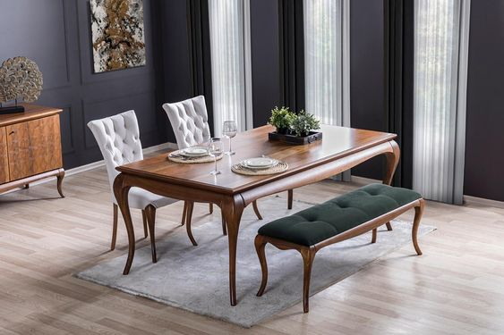
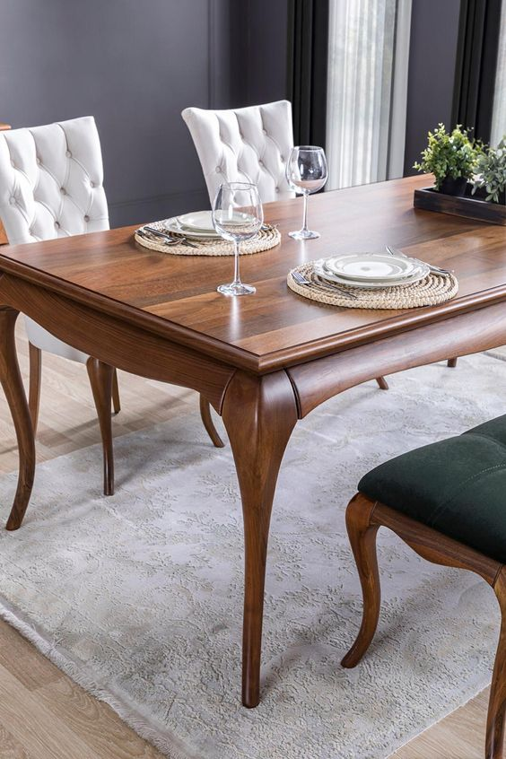

La tapicería es un oficio de los más antiguos que se mantienen vivos hasta la actualidad. Podemos estar seguros de esto gracias a las sillas fabricadas por los egipcios cinco milenios antes de Cristo, que fueron halladas en las tumbas faraónicas, por ejemplo. Los pueblos nómadas solían usar cojines y alfombras como base de sus tiendas para volverlas más cómodas.
Con el paso de los siglos, surgieron las mesas y las sillas que aprovechaban esta con propósitos similares. Se cree que los artesanos que hasta aquella época habían fabricado las tiendas fueron los mismos que más adelante se dedicaron a usar la tapicería en el mobiliario, tal como se puede apreciar en diversos grabados que se conservan hasta el presente.La tapicería es un oficio de los más antiguos que se mantienen vivos hasta la actualidad. Podemos estar seguros de esto gracias a las sillas fabricadas por los egipcios cinco milenios antes de Cristo, que fueron halladas en las tumbas faraónicas, por ejemplo. Los pueblos nómadas solían usar cojines y alfombras como base de sus tiendas para volverlas más cómodas.
Con el paso de los siglos, surgieron las mesas y las sillas que aprovechaban esta con propósitos similares. Se cree que los artesanos que hasta aquella época habían fabricado las tiendas fueron los mismos que más adelante se dedicaron a usar la tapicería en el mobiliario, tal como se puede apreciar en diversos grabados que se conservan hasta el presente.
